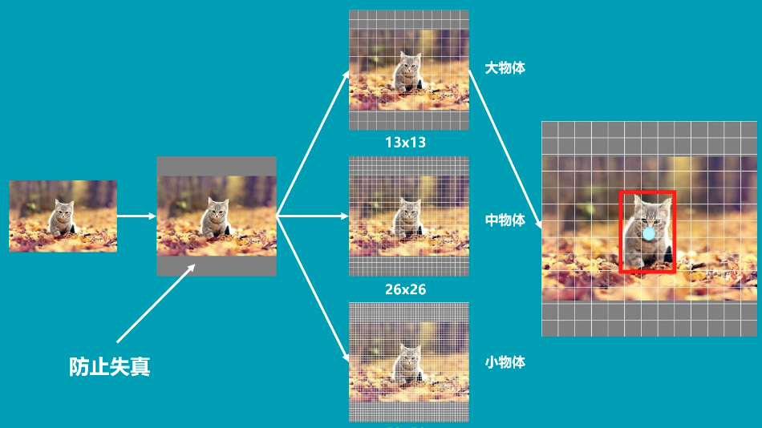

github：https://github.com/qqwweee/keras-yolo3
csdn: https://blog.csdn.net/weixin_44791964/article/details/103276106
yolo3检测基本原理

现将图片转换为416*416的网格（加灰条防止失真），再将其转换为13*13或其他大小，如果检测大物体，选择13*13,检测小物体选择52*52的网格。每个网格负责一个区域的检测，只要物体的中心点落在这个区域，这个物体就是这个网格点来确定的。
yolo3的网络结构

Darknet-53为特征提取网络，后面为利用特征进行目标检测。
Darknet-53中的最后三个特征层，对应不同尺度的目标检测。
- 最后一个特征层 ：5次卷积后
3*3卷积,1*1卷积进行通道调整，最后13*13的网络中的输出13*13*75大小，这13*13代表13*13个格点，3为每个点生成3个先验框，25为（4+1+20，4:x_offset,y_offset,h和w，1:置信度，分类结果：20）。 - 倒数第二个特征层：对
13*13进行上采样，结合后进行5次卷积，然后3*3卷积，1*1进行通道调整
Darknet53主干网络
残差结构块使得前一个特征层中的其中一部分特征可以不经过卷积直接映射到下一个特征层，利于特征提取。
残差结构块：33的卷积将通道数压缩为原来的一半(得x)，之后对x进行11卷积将通道数复原，同时对x进行残差操作，将这两部分结合。
解码过程
由第二步我们可以获得三个特征层的预测结果，shape分别为(N,13,13,255)，(N,26,26,255)，(N,52,52,255)的数据，对应每个图分为13x13、26x26、52x52的网格上3个预测框的位置。
但是这个预测结果并不对应着最终的预测框在图片上的位置，还需要解码才可以完成。
此处要讲一下yolo3的预测原理，yolo3的3个特征层分别将整幅图分为13x13、26x26、52x52的网格，每个网络点负责一个区域的检测。
我们知道特征层的预测结果对应着三个预测框的位置，我们先将其reshape一下，其结果为(N,13,13,3,85)，(N,26,26,3,85)，(N,52,52,3,85)。
最后一个维度中的85包含了4+1+80，分别代表x_offset、y_offset、h和w、置信度、分类结果。
yolo3的解码过程就是将每个网格点加上它对应的x_offset和y_offset，加完后的结果就是预测框的中心，然后再利用 先验框和h、w结合 计算出预测框的长和宽。这样就能得到整个预测框的位置了。
YOLOv3相比于之前的yolo1和yolo2，改进较大，主要改进方向有：
1、主干网络修改为darknet53，其重要特点是使用了残差网络Residual，darknet53中的残差卷积就是进行一次3X3、步长为2的卷积，然后保存该卷积layer，再进行一次1X1的卷积和一次3X3的卷积，并把这个结果加上layer作为最后的结果， 残差网络的特点是容易优化，并且能够通过增加相当的深度来提高准确率。其内部的残差块使用了跳跃连接，缓解了在深度神经网络中增加深度带来的梯度消失问题。
2、darknet53的每一个卷积部分使用了特有的DarknetConv2D结构，每一次卷积的时候进行l2正则化，完成卷积后进行BatchNormalization标准化与LeakyReLU。普通的ReLU是将所有的负值都设为零，Leaky ReLU则是给所有负值赋予一个非零斜率。